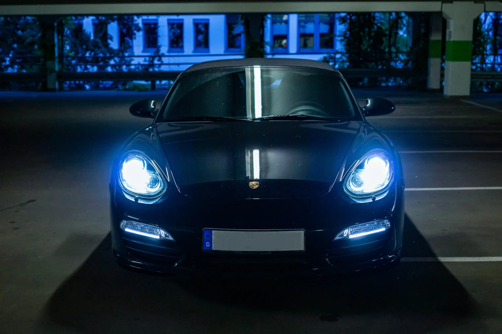
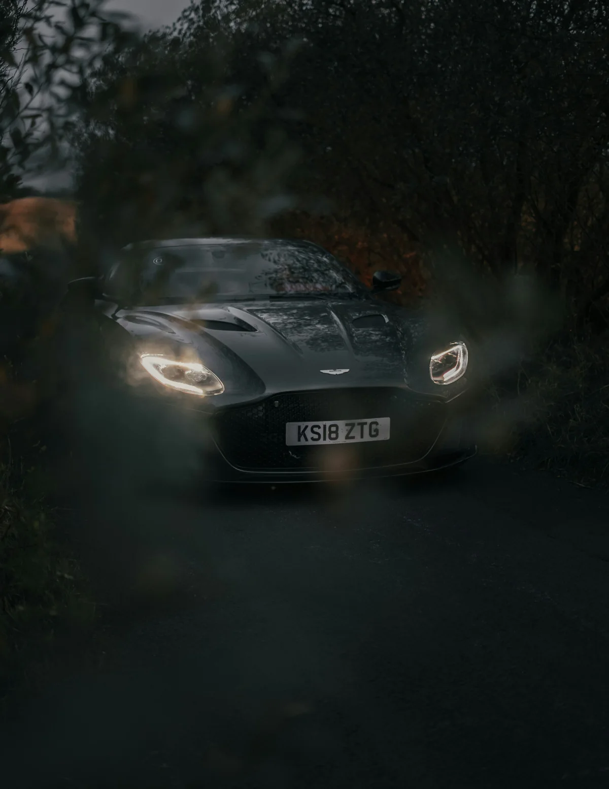

AUTOMOTIVE HAUTE COUTURETHE ART OF PERFECTION / VOL. 01
ИСКУССТВОБЕЗУПРЕЧНОСТИ.

01 / LIGHT STUDY
++БЛЕСК — ЛИШЬ НАЧАЛО.Детейлинг для тех,
кто замечает каждую деталь.
В АТЕЛЬЕ↗01 / ФИЛОСОФИЯTHE ATELIER APPROACH
Форма вызывает
чувства.
Детали остаются.
✳Автомобиль — больше, чем средство движения. Это линии, к которым хочется вернуться. Свет, который хочется поймать. Характер, который важно сохранить.
ATELIER — рабочая концепция пространства, где уход за автомобилем становится внимательной работой с каждой поверхностью.
Открыть коллекцию услуг ↗ 
ЛИНИИ. СВЕТ. ХАРАКТЕР.FIG. 01ТОЧНОСТЬ — ЭТО ФОРМА УВАЖЕНИЯ.
02 / КОЛЛЕКЦИЯ УСЛУГCURATED CARE
Сохранить.
Подчеркнуть.
Семь направлений.
Один принцип — внимание
к тому, что имеет значение.
Глубина, которую видно.
Коррекция лакокрасочного покрытия. Удаление поверхностных дефектов и восстановление глубины цвета — с подбором метода после осмотра.
Диагностика ЛКП · Подготовка поверхности · Контроль света
Обсудить полировку ↗04 / МАСТЕРСТВОTHE PRECISION RITUAL
01PRECISION
IN PROGRESS
Совершенство
в процессе.
Прокрутите, чтобы проследить
логику работы с автомобилем.
01 / OBSERVEСначала — увидеть.
Состояние лакокрасочного покрытия, сложные участки и особенности материалов. Диагностика определяет маршрут работы.
02 / REFINEЗатем — раскрыть.
Подготовка поверхности и аккуратная коррекция. Цель — чистота отражения с учётом толщины и состояния покрытия.
03 / PRESERVEИ наконец — сохранить.
Подбор защитного решения под привычки владельца. Финальный осмотр и рекомендации по дальнейшему уходу.
05 / АВТОМОБИЛЬНЫЙ ЖУРНАЛSELECTED PERSPECTIVES
Характер.
В деталях.
Редакционная фотоподборка.
Демонстрация будущего портфолио,
не работы детейлинг-центра.
Фотографии независимых авторов. Источники и лицензии — в фотокредитах.
06 / ВАШ ОПЫТEFFORTLESS BY DESIGN
Ваше время.
Наше внимание.
Всё начинается с разговора
о вашем автомобиле.
01 / LET'S TALKРасскажите о модели, состоянии и ваших ожиданиях. Вместе определим, что действительно нужно автомобилю.
Начать разговор ↗
07 / ПРИНЦИПЫ РАБОТЫNOTHING IS INCIDENTAL
Доверие
начинается
с ясности.
Поверхность определяет метод+
Подбор абразивности, состава и технологии начинается с осмотра. Универсальное решение не учитывает историю конкретного автомобиля.
Материалы имеют значение+
Кожа, текстиль, пластик и декоративные элементы требуют разных составов. Перед обработкой важно проверить совместимость на незаметном участке.
Объём работ — до начала+
Состав услуг, сроки и стоимость должны быть согласованы после диагностики. Здесь нет вымышленных цен, сертификатов или обещаний результата.
Уход продолжается после встречи+
Рекомендации по мойке и обслуживанию подбираются под нанесённое покрытие и режим эксплуатации. Защита тоже требует внимания.
08 / В АТЕЛЬЕYOUR NEXT CHAPTER
ДЛЯ ВАШЕГО АВТОМОБИЛЯНачнём
с деталей.
Расскажите о вашем автомобиле.
Дальше — внимание к каждому нюансу.
ВАШ ВЫБОРУслуга ещё не выбранаСтоимость и сроки — после осмотра
Портфолио-концепция. Приём заявок пока не подключён: форму можно проверить, данные никуда не отправляются.